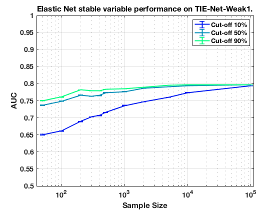
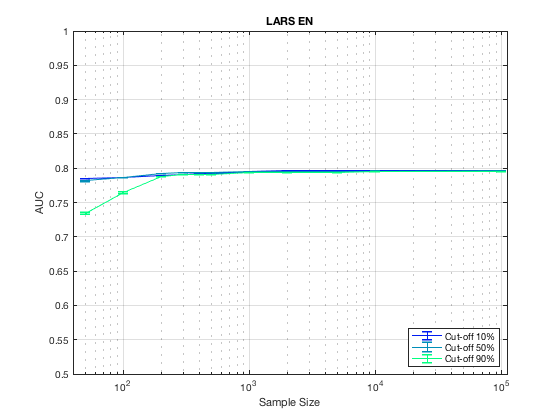

Stable Variable Experiments on MltNet with LARS EN.
summary_stable_vars("MltNet", 3)
Figure 29. LARS_EN Model Generalizatbility.
____________________________________________

Figure 30. LARS_EN Feature Generalizability.
_____________________________________________

Table 155. Stability Cut Off Performance. Sample Size = 50. LARS_EN.
_____________________________________________________________________
Stability Model_Generalizability Feature_Generalizability Number_Stable_Features Number_Non_Zero
_________ ______________________ ________________________ ______________________ _______________
'>=00%' ' 0.626 +/- 0.001 ' ' 0.785 +/- 0.000 ' ' 406.7 +/- 186.8 ' 3
'>=10%' ' 0.626 +/- 0.001 ' ' 0.785 +/- 0.000 ' ' 406.7 +/- 186.8 ' 3
'>=20%' ' 0.633 +/- 0.001 ' ' 0.785 +/- 0.000 ' ' 311.3 +/- 177.7 ' 3
'>=30%' ' 0.621 +/- 0.001 ' ' 0.785 +/- 0.000 ' ' 209.3 +/- 120.0 ' 3
'>=40%' ' 0.614 +/- 0.001 ' ' 0.785 +/- 0.000 ' ' 209.3 +/- 120.0 ' 3
'>=50%' ' 0.613 +/- 0.001 ' ' 0.782 +/- 0.000 ' ' 239.5 +/- 167.9 ' 2
'>=60%' ' 0.620 +/- 0.002 ' ' 0.780 +/- 0.000 ' ' 139.5 +/- 97.9 ' 2
'>=70%' ' 0.625 +/- 0.002 ' ' 0.770 +/- 0.001 ' ' 61.0 +/- 42.4 ' 2
'>=80%' ' 0.627 +/- 0.002 ' ' 0.765 +/- 0.001 ' ' 56.0 +/- 38.9 ' 2
'>=90%' ' 0.638 +/- 0.002 ' ' 0.734 +/- 0.002 ' ' 108.0 +/- 0.0 ' 1
Table 156. Stability Cut Off Performance. Sample Size = 100. LARS_EN.
______________________________________________________________________
Stability Model_Generalizability Feature_Generalizability Number_Stable_Features Number_Non_Zero
_________ ______________________ ________________________ ______________________ _______________
'>=00%' ' 0.662 +/- 0.001 ' ' 0.787 +/- 0.000 ' ' 172.3 +/- 97.2 ' 3
'>=10%' ' 0.661 +/- 0.001 ' ' 0.787 +/- 0.000 ' ' 172.3 +/- 97.2 ' 3
'>=20%' ' 0.660 +/- 0.001 ' ' 0.789 +/- 0.000 ' ' 141.3 +/- 79.3 ' 3
'>=30%' ' 0.649 +/- 0.001 ' ' 0.788 +/- 0.000 ' ' 113.3 +/- 64.6 ' 3
'>=40%' ' 0.647 +/- 0.001 ' ' 0.788 +/- 0.000 ' ' 113.3 +/- 64.6 ' 3
'>=50%' ' 0.653 +/- 0.001 ' ' 0.786 +/- 0.000 ' ' 101.7 +/- 57.8 ' 3
'>=60%' ' 0.657 +/- 0.001 ' ' 0.784 +/- 0.000 ' ' 67.0 +/- 38.1 ' 3
'>=70%' ' 0.674 +/- 0.001 ' ' 0.780 +/- 0.000 ' ' 72.5 +/- 50.6 ' 2
'>=80%' ' 0.687 +/- 0.001 ' ' 0.774 +/- 0.001 ' ' 52.5 +/- 36.4 ' 2
'>=90%' ' 0.705 +/- 0.001 ' ' 0.764 +/- 0.001 ' ' 52.5 +/- 36.4 ' 2
Table 157. Stability Cut Off Performance. Sample Size = 200. LARS_EN.
______________________________________________________________________
Stability Model_Generalizability Feature_Generalizability Number_Stable_Features Number_Non_Zero
_________ ______________________ ________________________ ______________________ _______________
'>=00%' ' 0.691 +/- 0.001 ' ' 0.789 +/- 0.000 ' ' 135.7 +/- 74.9 ' 3
'>=10%' ' 0.688 +/- 0.001 ' ' 0.789 +/- 0.000 ' ' 135.7 +/- 74.9 ' 3
'>=20%' ' 0.686 +/- 0.001 ' ' 0.791 +/- 0.000 ' ' 89.3 +/- 49.3 ' 3
'>=30%' ' 0.687 +/- 0.001 ' ' 0.792 +/- 0.000 ' ' 45.3 +/- 25.3 ' 3
'>=40%' ' 0.687 +/- 0.001 ' ' 0.792 +/- 0.000 ' ' 45.3 +/- 25.3 ' 3
'>=50%' ' 0.697 +/- 0.001 ' ' 0.793 +/- 0.000 ' ' 112.0 +/- 0.0 ' 1
'>=60%' ' 0.701 +/- 0.001 ' ' 0.792 +/- 0.000 ' ' 112.0 +/- 0.0 ' 1
'>=70%' ' 0.718 +/- 0.001 ' ' 0.792 +/- 0.000 ' ' 112.0 +/- 0.0 ' 1
'>=80%' ' 0.723 +/- 0.001 ' ' 0.791 +/- 0.000 ' ' 109.0 +/- 0.0 ' 1
'>=90%' ' 0.748 +/- 0.001 ' ' 0.788 +/- 0.000 ' ' 99.0 +/- 0.0 ' 1
Table 158. Stability Cut Off Performance. Sample Size = 300. LARS_EN.
______________________________________________________________________
Stability Model_Generalizability Feature_Generalizability Number_Stable_Features Number_Non_Zero
_________ ______________________ ________________________ ______________________ _______________
'>=00%' ' 0.702 +/- 0.000 ' ' 0.791 +/- 0.000 ' ' 215.3 +/- 79.3 ' 3
'>=10%' ' 0.703 +/- 0.000 ' ' 0.791 +/- 0.000 ' ' 215.3 +/- 79.3 ' 3
'>=20%' ' 0.702 +/- 0.000 ' ' 0.793 +/- 0.000 ' ' 135.0 +/- 75.3 ' 3
'>=30%' ' 0.714 +/- 0.001 ' ' 0.794 +/- 0.000 ' ' 57.3 +/- 31.9 ' 3
'>=40%' ' 0.716 +/- 0.001 ' ' 0.794 +/- 0.000 ' ' 57.3 +/- 31.9 ' 3
'>=50%' ' 0.728 +/- 0.001 ' ' 0.793 +/- 0.000 ' ' 68.0 +/- 0.0 ' 1
'>=60%' ' 0.733 +/- 0.001 ' ' 0.793 +/- 0.000 ' ' 62.0 +/- 0.0 ' 1
'>=70%' ' 0.747 +/- 0.001 ' ' 0.793 +/- 0.000 ' ' 62.0 +/- 0.0 ' 1
'>=80%' ' 0.750 +/- 0.001 ' ' 0.792 +/- 0.000 ' ' 27.0 +/- 0.0 ' 1
'>=90%' ' 0.760 +/- 0.001 ' ' 0.790 +/- 0.000 ' ' 6.0 +/- 0.0 ' 1
Table 159. Stability Cut Off Performance. Sample Size = 400. LARS_EN.
______________________________________________________________________
Stability Model_Generalizability Feature_Generalizability Number_Stable_Features Number_Non_Zero
_________ ______________________ ________________________ ______________________ _______________
'>=00%' ' 0.706 +/- 0.000 ' ' 0.792 +/- 0.000 ' ' 114.3 +/- 63.4 ' 3
'>=10%' ' 0.705 +/- 0.000 ' ' 0.792 +/- 0.000 ' ' 114.3 +/- 63.4 ' 3
'>=20%' ' 0.714 +/- 0.000 ' ' 0.794 +/- 0.000 ' ' 58.7 +/- 31.9 ' 3
'>=30%' ' 0.727 +/- 0.000 ' ' 0.794 +/- 0.000 ' ' 18.7 +/- 9.9 ' 3
'>=40%' ' 0.730 +/- 0.001 ' ' 0.794 +/- 0.000 ' ' 18.7 +/- 9.9 ' 3
'>=50%' ' 0.732 +/- 0.001 ' ' 0.794 +/- 0.000 ' ' 10.0 +/- 6.4 ' 2
'>=60%' ' 0.742 +/- 0.001 ' ' 0.793 +/- 0.000 ' ' 7.0 +/- 4.2 ' 2
'>=70%' ' 0.749 +/- 0.001 ' ' 0.792 +/- 0.000 ' ' 4.0 +/- 2.1 ' 2
'>=80%' ' 0.758 +/- 0.001 ' ' 0.791 +/- 0.000 ' ' 4.0 +/- 2.1 ' 2
'>=90%' ' 0.768 +/- 0.000 ' ' 0.791 +/- 0.000 ' ' 6.0 +/- 0.0 ' 1
Table 160. Stability Cut Off Performance. Sample Size = 500. LARS_EN.
______________________________________________________________________
Stability Model_Generalizability Feature_Generalizability Number_Stable_Features Number_Non_Zero
_________ ______________________ ________________________ ______________________ _______________
'>=00%' ' 0.714 +/- 0.000 ' ' 0.793 +/- 0.000 ' ' 197.0 +/- 107.1 ' 3
'>=10%' ' 0.715 +/- 0.000 ' ' 0.793 +/- 0.000 ' ' 197.0 +/- 107.1 ' 3
'>=20%' ' 0.722 +/- 0.000 ' ' 0.794 +/- 0.000 ' ' 161.3 +/- 89.4 ' 3
'>=30%' ' 0.741 +/- 0.001 ' ' 0.793 +/- 0.000 ' ' 92.7 +/- 51.5 ' 3
'>=40%' ' 0.741 +/- 0.001 ' ' 0.793 +/- 0.000 ' ' 92.7 +/- 51.5 ' 3
'>=50%' ' 0.748 +/- 0.001 ' ' 0.793 +/- 0.000 ' ' 89.0 +/- 50.5 ' 3
'>=60%' ' 0.758 +/- 0.001 ' ' 0.793 +/- 0.000 ' ' 96.0 +/- 67.2 ' 2
'>=70%' ' 0.764 +/- 0.000 ' ' 0.793 +/- 0.000 ' ' 114.0 +/- 0.0 ' 1
'>=80%' ' 0.769 +/- 0.000 ' ' 0.792 +/- 0.000 ' ' 102.0 +/- 0.0 ' 1
'>=90%' ' 0.776 +/- 0.000 ' ' 0.791 +/- 0.000 ' ' 62.0 +/- 0.0 ' 1
Table 161. Stability Cut Off Performance. Sample Size = 1000. LARS_EN.
_______________________________________________________________________
Stability Model_Generalizability Feature_Generalizability Number_Stable_Features Number_Non_Zero
_________ ______________________ ________________________ ______________________ _______________
'>=00%' ' 0.750 +/- 0.000 ' ' 0.796 +/- 0.000 ' ' 86.0 +/- 33.3 ' 3
'>=10%' ' 0.749 +/- 0.000 ' ' 0.796 +/- 0.000 ' ' 86.0 +/- 33.3 ' 3
'>=20%' ' 0.764 +/- 0.000 ' ' 0.796 +/- 0.000 ' ' 67.0 +/- 30.7 ' 3
'>=30%' ' 0.779 +/- 0.000 ' ' 0.796 +/- 0.000 ' ' 25.3 +/- 12.3 ' 3
'>=40%' ' 0.779 +/- 0.000 ' ' 0.796 +/- 0.000 ' ' 25.3 +/- 12.3 ' 3
'>=50%' ' 0.784 +/- 0.000 ' ' 0.796 +/- 0.000 ' ' 22.7 +/- 11.7 ' 3
'>=60%' ' 0.785 +/- 0.000 ' ' 0.795 +/- 0.000 ' ' 13.0 +/- 7.1 ' 2
'>=70%' ' 0.786 +/- 0.000 ' ' 0.795 +/- 0.000 ' ' 12.5 +/- 7.4 ' 2
'>=80%' ' 0.787 +/- 0.000 ' ' 0.794 +/- 0.000 ' ' 23.0 +/- 0.0 ' 1
'>=90%' ' 0.787 +/- 0.000 ' ' 0.793 +/- 0.000 ' ' 23.0 +/- 0.0 ' 1
Table 162. Stability Cut Off Performance. Sample Size = 2000. LARS_EN.
_______________________________________________________________________
Stability Model_Generalizability Feature_Generalizability Number_Stable_Features Number_Non_Zero
_________ ______________________ ________________________ ______________________ _______________
'>=00%' ' 0.786 +/- 0.000 ' ' 0.796 +/- 0.000 ' ' 50.3 +/- 20.5 ' 3
'>=10%' ' 0.786 +/- 0.000 ' ' 0.796 +/- 0.000 ' ' 50.3 +/- 20.5 ' 3
'>=20%' ' 0.788 +/- 0.000 ' ' 0.796 +/- 0.000 ' ' 28.0 +/- 11.3 ' 3
'>=30%' ' 0.790 +/- 0.000 ' ' 0.796 +/- 0.000 ' ' 25.3 +/- 12.0 ' 3
'>=40%' ' 0.791 +/- 0.000 ' ' 0.796 +/- 0.000 ' ' 25.3 +/- 12.0 ' 3
'>=50%' ' 0.790 +/- 0.000 ' ' 0.795 +/- 0.000 ' ' 24.0 +/- 12.4 ' 3
'>=60%' ' 0.791 +/- 0.000 ' ' 0.795 +/- 0.000 ' ' 23.0 +/- 12.1 ' 3
'>=70%' ' 0.791 +/- 0.000 ' ' 0.794 +/- 0.000 ' ' 21.3 +/- 11.7 ' 3
'>=80%' ' 0.791 +/- 0.000 ' ' 0.794 +/- 0.000 ' ' 27.0 +/- 18.4 ' 2
'>=90%' ' 0.790 +/- 0.000 ' ' 0.793 +/- 0.000 ' ' 6.5 +/- 3.9 ' 2
Table 163. Stability Cut Off Performance. Sample Size = 5000. LARS_EN.
_______________________________________________________________________
Stability Model_Generalizability Feature_Generalizability Number_Stable_Features Number_Non_Zero
_________ ______________________ ________________________ ______________________ _______________
'>=00%' ' 0.793 +/- 0.000 ' ' 0.797 +/- 0.000 ' ' 55.3 +/- 19.7 ' 3
'>=10%' ' 0.793 +/- 0.000 ' ' 0.797 +/- 0.000 ' ' 55.3 +/- 19.7 ' 3
'>=20%' ' 0.793 +/- 0.000 ' ' 0.796 +/- 0.000 ' ' 51.7 +/- 20.7 ' 3
'>=30%' ' 0.793 +/- 0.000 ' ' 0.796 +/- 0.000 ' ' 31.0 +/- 11.1 ' 3
'>=40%' ' 0.793 +/- 0.000 ' ' 0.796 +/- 0.000 ' ' 31.0 +/- 11.1 ' 3
'>=50%' ' 0.793 +/- 0.000 ' ' 0.795 +/- 0.000 ' ' 29.0 +/- 11.5 ' 3
'>=60%' ' 0.793 +/- 0.000 ' ' 0.795 +/- 0.000 ' ' 26.0 +/- 12.1 ' 3
'>=70%' ' 0.793 +/- 0.000 ' ' 0.795 +/- 0.000 ' ' 23.0 +/- 11.3 ' 3
'>=80%' ' 0.793 +/- 0.000 ' ' 0.794 +/- 0.000 ' ' 20.0 +/- 11.0 ' 3
'>=90%' ' 0.792 +/- 0.000 ' ' 0.794 +/- 0.000 ' ' 27.5 +/- 18.7 ' 2
Table 164. Stability Cut Off Performance. Sample Size = 10000. LARS_EN.
________________________________________________________________________
Stability Model_Generalizability Feature_Generalizability Number_Stable_Features Number_Non_Zero
_________ ______________________ ________________________ ______________________ _______________
'>=00%' ' 0.795 +/- 0.000 ' ' 0.797 +/- 0.000 ' ' 77.0 +/- 28.0 ' 3
'>=10%' ' 0.795 +/- 0.000 ' ' 0.797 +/- 0.000 ' ' 77.0 +/- 28.0 ' 3
'>=20%' ' 0.795 +/- 0.000 ' ' 0.797 +/- 0.000 ' ' 52.3 +/- 20.5 ' 3
'>=30%' ' 0.795 +/- 0.000 ' ' 0.796 +/- 0.000 ' ' 50.3 +/- 21.2 ' 3
'>=40%' ' 0.795 +/- 0.000 ' ' 0.796 +/- 0.000 ' ' 50.3 +/- 21.2 ' 3
'>=50%' ' 0.795 +/- 0.000 ' ' 0.796 +/- 0.000 ' ' 46.7 +/- 19.7 ' 3
'>=60%' ' 0.795 +/- 0.000 ' ' 0.796 +/- 0.000 ' ' 16.3 +/- 3.8 ' 3
'>=70%' ' 0.795 +/- 0.000 ' ' 0.795 +/- 0.000 ' ' 16.0 +/- 4.0 ' 3
'>=80%' ' 0.794 +/- 0.000 ' ' 0.795 +/- 0.000 ' ' 15.0 +/- 4.1 ' 3
'>=90%' ' 0.794 +/- 0.000 ' ' 0.795 +/- 0.000 ' ' 18.5 +/- 3.2 ' 2
Table 165. Stability Cut Off Performance. Sample Size = 100000. LARS_EN.
_________________________________________________________________________
Stability Model_Generalizability Feature_Generalizability Number_Stable_Features Number_Non_Zero
_________ ______________________ ________________________ ______________________ _______________
'>=00%' ' 0.797 +/- 0.000 ' ' 0.797 +/- 0.000 ' ' 60.3 +/- 12.9 ' 3
'>=10%' ' 0.797 +/- 0.000 ' ' 0.797 +/- 0.000 ' ' 60.3 +/- 12.9 ' 3
'>=20%' ' 0.796 +/- 0.000 ' ' 0.796 +/- 0.000 ' ' 34.0 +/- 7.8 ' 3
'>=30%' ' 0.796 +/- 0.000 ' ' 0.796 +/- 0.000 ' ' 17.0 +/- 3.5 ' 3
'>=40%' ' 0.796 +/- 0.000 ' ' 0.796 +/- 0.000 ' ' 17.0 +/- 3.5 ' 3
'>=50%' ' 0.796 +/- 0.000 ' ' 0.796 +/- 0.000 ' ' 17.0 +/- 3.5 ' 3
'>=60%' ' 0.796 +/- 0.000 ' ' 0.796 +/- 0.000 ' ' 17.0 +/- 3.5 ' 3
'>=70%' ' 0.796 +/- 0.000 ' ' 0.796 +/- 0.000 ' ' 15.7 +/- 3.9 ' 3
'>=80%' ' 0.796 +/- 0.000 ' ' 0.796 +/- 0.000 ' ' 15.0 +/- 4.1 ' 3
'>=90%' ' 0.795 +/- 0.000 ' ' 0.795 +/- 0.000 ' ' 20.5 +/- 1.8 ' 2